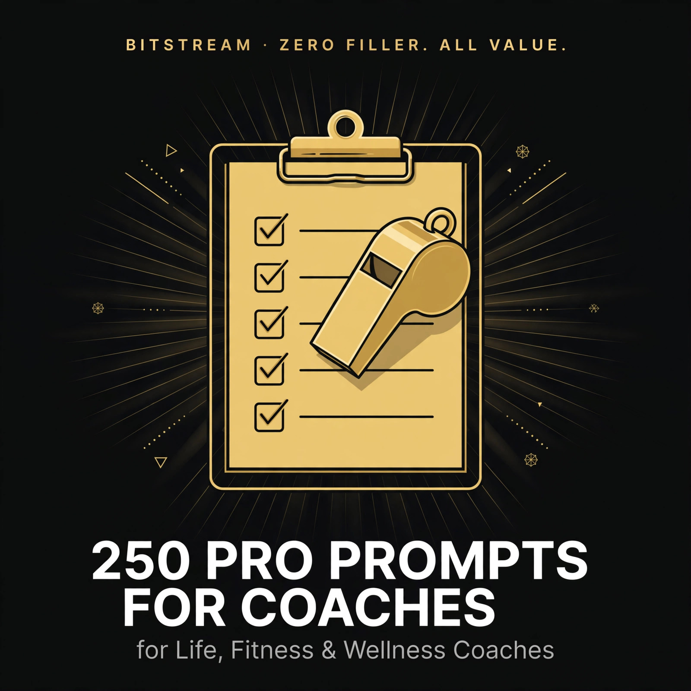

BITSTREAM · ZERO FILLER. ALL VALUE.
250 Pro Prompts
for Coaches
for Life, Fitness & Wellness Coaches
Copy-paste prompts for every part of your practice.
Open a free AI tool, paste, fill in the blanks, done.
PRO PACK · $14.99
How to use this pack (60 seconds)
- Open a free AI tool — ChatGPT (chatgpt.com), Claude (claude.ai), or Gemini (gemini.google.com). No paid plan needed.
- Copy any prompt and replace the [BRACKETED] parts with your coaching details.
- Be specific. Your niche, your offer, your price — specifics in, quality out. "Write me a script" gets generic. "Write a 20-minute discovery call script for fitness coaching for new moms, closing my $900 8-week program" gets usable.
- Treat the first answer as a draft. Reply with "make it warmer," "shorter," or "more direct" until it sounds like you.
- Stay in your lane. You're the coach — AI drafts, you decide. Anything health-related gets verified with the qualified professional (doctor, RD, licensed PT).
Rule 1 — Describe, don't write. You don't need to be a copywriter. Describe what you want in plain words — the AI does the writing, you do the coaching.
Rule 2 — Coach, don't diagnose. Use AI as an organizer and checklist-builder for health and fitness topics. Never ask it for medical diagnoses, diet prescriptions, or dosing — and always have clients verify with their doctor, registered dietitian, or licensed trainer.
Rule 3 — One system at a time. Don't rebuild your whole practice today. Pick one prompt — the discovery script, the intake form, the pricing page — and ship it.
1 · Discovery Calls & First Conversations
Turn first calls into paying clients — scripts, questions, and follow-ups that close.
PROMPT 001
Discovery call script — life coach
Write me a 20-minute discovery call script for my life coaching practice. Include: a warm 2-minute opener, 8 questions that uncover the prospect's real goal (not the surface one), a 3-minute explanation of how I work, and a confident close that offers my [12-week program at $1,200]. My niche: [burned-out working moms]. Tone: warm, direct, no sleaze.
PROMPT 002
Discovery call script — fitness coach
Write a 20-minute discovery call script for my fitness coaching business. Cover: opener, questions about their training history, injuries, and schedule, how I explain my [90-day online training program], and how I close without pressuring. I specialize in [beginners over 40]. End with a simple yes/no next step.
PROMPT 003
Discovery call script — wellness coach
Write a 20-minute discovery call script for my wellness coaching practice. Include questions that explore sleep, stress, energy, and habits without sounding clinical. My program is [a 6-week reset at $600]. Include a line I can use when someone says they need to think about it. Note: frame all questions as lifestyle coaching, not medical advice.
PROMPT 004
10 discovery questions that reveal the real problem
Give me 10 discovery call questions for [life] coaching that go deeper than surface answers. For each question, add a follow-up probe for when the answer is vague. Target client: [women in their 30s changing careers].
PROMPT 005
Qualifying questions before the call
Write 6 short pre-call qualifying questions for my booking form. I want to filter out people who can't afford coaching, aren't ready to change, or need therapy instead of coaching. My niche is [fitness coaching for busy professionals].
PROMPT 006
Discovery call follow-up email — hot lead
Write a follow-up email to send 2 hours after a great discovery call where [Sarah] said yes to my [8-week confidence program at $800]. Include: recap of what we discussed, the link to pay, what happens next, and a warm personal line referencing [her goal of speaking up in meetings].
PROMPT 007
Discovery call follow-up email — warm lead
Write a follow-up email for a prospect who said 'I need to think about it' on our call. Reference [her goal of losing 20 pounds before her wedding], restate the offer once, and give a soft deadline of [Friday]. No pressure, but no vagueness either.
PROMPT 008
Discovery call follow-up — no-show
Write a short, kind email to a prospect who missed our discovery call. Offer [2 new time slots], keep it blame-free, and add one sentence that reminds them why they booked in the first place: [their goal of starting a business].
PROMPT 009
The 'send me info' redirect
A prospect emailed 'just send me your prices.' Write a friendly reply that shares my [3 packages and prices] but redirects them to a 15-minute call, explaining that the call saves them from picking the wrong package. My niche: [wellness coaching].
PROMPT 010
Discovery call opener lines — 5 options
Give me 5 different opening lines for a coaching discovery call. Each under 20 words. Mix: warm, confident, playful, direct, and curiosity-driven. My niche is [life coaching for new managers].
PROMPT 011
Closing the call — 5 confident closes
Give me 5 ways to close a discovery call and ask for the sale, each 2-3 sentences. My offer: [12 weeks of 1:1 coaching, $1,500, weekly calls + Voxer support]. Range from soft to direct so I can match the prospect's energy.
PROMPT 012
Handling 'I can't afford it' on the call
A prospect just said they can't afford my [$1,200] program on our discovery call. Write me a 3-part response: acknowledge without apologizing for my price, ask one clarifying question, and offer [my $400/month payment plan OR my $49 group program] as a genuine alternative — not a desperate discount.
PROMPT 013
Handling 'I need to ask my spouse'
Write a response for when a prospect says they need to ask their spouse before joining my [$900] program. Include: what to say on the call, and a short email they can forward to their spouse that sells the program for them.
PROMPT 014
Discovery call scorecard
Create a simple discovery call scorecard I can fill out after each call: prospect name, their #1 goal in their words, urgency 1-5, budget fit yes/no, readiness 1-5, objections raised, and next step with date. Format as a copy-paste template for [my 1:1 coaching practice].
PROMPT 015
Turning a bad-fit call into a referral
Write a gracious script for ending a discovery call when the prospect is NOT a fit — e.g., they need [therapy / a registered dietitian / a business consultant], not coaching. Include how to refer them out kindly and ask for a referral in return.
PROMPT 016
Discovery call for corporate clients
Write a discovery call agenda for pitching my coaching to [an HR manager at a 200-person company]. Cover: their team's pain points, how my [6-session leadership coaching package] works for teams, pricing at [$5,000 for 10 employees], and what a pilot looks like.
PROMPT 017
Group program discovery call script
Write a 15-minute enrollment call script for my group coaching program: [The Energy Reset — 6 weeks, $297, starts October 20]. Include: quick qualification, what the group format actually feels like, how I handle 'I've never done group coaching,' and the close.
PROMPT 018
DM-to-call script for Instagram
Write a DM conversation script that moves an interested Instagram follower to a discovery call. 5-6 messages max. My niche: [fitness coaching for new moms]. Start from their comment '[this is exactly what I need]' and end with my booking link. Friendly, human, not bot-like.
PROMPT 019
Post-call voice note script
Write a 60-second voice note script to send after a discovery call where the prospect seemed excited but hesitant. Reference [their specific goal], remind them of [the one insight from our call], and restate the next step clearly.
PROMPT 020
Discovery call prep checklist
Make me a 10-item pre-call checklist: what to review about the prospect, tech to test, mindset reset, and the 3 things I must have open on my screen. For [Zoom-based 1:1 coaching calls].
PROMPT 021
Re-engaging a cold lead from 3 months ago
Write a re-engagement email to [Jessica], who had a discovery call 3 months ago but didn't join. Mention [my new 8-week program], reference [her goal of running a 10K], and offer a fresh 15-minute call. Warm, zero guilt-tripping.
PROMPT 022
Discovery call questions for couples coaching
Give me 12 discovery questions for a couples coaching call where [both partners] are on the line. Cover: each person's goal, how they handle disagreement, and commitment level — plus 2 questions that reveal if one partner was dragged here.
PROMPT 023
Discovery call questions for teen/parent coaching
Give me 10 discovery questions for a parent inquiring about coaching for their [16-year-old]. Cover: the teen's willingness, the parent's real concern vs. the stated one, and boundaries on what I will and won't share with the parent.
PROMPT 024
The 5-minute mini-discovery call
Write a tight 5-minute discovery call script for warm leads from my webinar. 3 qualifying questions, a 60-second program pitch for [my $497 group program], and a close. Assume they're already 70% sold.
PROMPT 025
Discovery call debrief template
Create a debrief template I fill out after every discovery call: what worked, what objection stumped me, what I'd say differently, close rate tracking, and one improvement for next time. Copy-paste format for [my notes app].
2 · Intake, Assessment & Onboarding
Welcome packets, questionnaires, and week-one plans that make new clients feel handled.
PROMPT 026
New client welcome email
Write a warm welcome email for a new coaching client who just paid for [my 12-week life coaching program]. Cover: what happens next, when our first call is, what to prepare, how to reach me between sessions, and one sentence that makes them feel they made the right decision.
PROMPT 027
Client intake questionnaire — life coach
Create a 20-question intake questionnaire for new life coaching clients. Cover: current situation, top 3 goals, what's been tried, obstacles, support system, and one 'dream outcome' question. Mix of short-answer and scale questions. My niche: [career changers in their 30s].
PROMPT 028
Client intake questionnaire — fitness coach
Create a 20-question intake form for new fitness coaching clients. Cover: training history, current activity level, schedule, equipment access ([home / gym]), injuries/past surgeries, and lifestyle factors like sleep and stress. IMPORTANT: include a clear note that this is for program organization only — they should get medical clearance from their doctor before starting, and I am not diagnosing or prescribing.
PROMPT 029
Client intake questionnaire — wellness coach
Create a 20-question intake form for new wellness coaching clients covering sleep, stress, energy, daily routines, and habits they want to change. My niche: [busy moms]. Add a disclaimer line: this supports lifestyle coaching only and is not medical advice — they should consult their doctor or a registered dietitian for medical or nutrition concerns.
PROMPT 030
PAR-Q style health screening questions
Write 10 plain-language health screening questions I can include in my fitness coaching intake (based on the standard PAR-Q concept): heart conditions, chest pain, dizziness, joint problems, medications affecting exercise, for [my fitness coaching clients]. Add the line: 'If you answer yes to any of these, please check with your doctor before we begin training.'
PROMPT 031
Onboarding week-one plan
Outline a week-one onboarding plan for a new [wellness] coaching client: what I send, what they complete, and what we cover on call #1. Goal: they feel organized and excited, not overwhelmed. Include a small 'quick win' for week one.
PROMPT 032
Setting expectations email
Write an email that sets coaching expectations clearly: what I do, what I don't do (I'm not a therapist/doctor), how fast results typically come, what I need FROM them, and my boundaries on [after-hours messages]. Tone: caring but firm. Niche: [life coaching].
PROMPT 033
Client agreement essentials
List the 12 things my 1:1 coaching agreement should cover: payment terms, cancellation policy, session frequency, communication between sessions, confidentiality, and scope limits. I'm a [fitness] coach — this is a checklist for me to discuss with a lawyer, not legal advice.
PROMPT 034
Welcome packet outline
Outline a 5-page new-client welcome packet: page-by-page contents including my story, how coaching works, their intake summary, our 90-day roadmap template, and house rules. For [a life coaching practice serving new managers].
PROMPT 035
First-session agenda
Write a 60-minute first-session agenda for a [life] coaching client: 10 min connection, 20 min deep-dive on their intake answers, 20 min goal-setting, 10 min homework + next steps. Include 5 questions to ask that I couldn't learn from the form.
PROMPT 036
Client 'about me' snapshot template
Create a one-page client snapshot template I fill out after intake: name, pronouns, big goal, top 3 obstacles, communication style, motivation triggers, and red flags to watch for. Copy-paste format for [my client files].
PROMPT 037
Onboarding video script
Write a 3-minute welcome video script for new clients. Cover: who I am in 30 seconds, what to expect in the first 30 days, where everything lives ([client portal / Google Drive]), and one encouraging line. My niche: [wellness coaching for busy moms].
PROMPT 038
Client portal setup checklist
Give me a checklist for setting up each new client's folder: intake form, signed agreement, payment confirmation, goal sheet, session notes doc, and progress tracker. Tools I use: [Google Drive + Calendly].
PROMPT 039
The 'what coaching is NOT' one-pager
Write a friendly one-page handout: 'What coaching is and isn't.' Contrast coaching vs. therapy vs. consulting vs. medical advice in plain language for [new life coaching clients]. Include the line: 'If we hit something outside my lane, I'll tell you and help you find the right professional.'
PROMPT 040
Assessing client readiness
Give me 8 questions to assess whether a new client is actually ready to do the work — not just excited on day one. Cover: time availability, past follow-through, support at home, and willingness to be uncomfortable. For [fitness coaching].
PROMPT 041
Client communication preferences form
Write a short form asking new clients how they want to communicate: preferred channel ([Voxer / text / email]), response-time expectations, and what counts as an emergency vs. a regular question. For [1:1 coaching with between-session support].
PROMPT 042
Onboarding survey — 30 days in
Write a 10-question check-in survey to send 30 days into coaching: what's working, what's not, energy/mood trends, and one open question. Include a 1-10 satisfaction scale and space for honest feedback. For [my 1:1 coaching clients].
PROMPT 043
Re-onboarding a returning client
Write a re-onboarding email + 8-question form for a past client returning after [6 months]. Acknowledge what's changed, capture new goals, and make them feel like a VIP returner, not a stranger. My program: [8-week fitness coaching].
PROMPT 044
Client offboarding email
Write a warm offboarding email for a client finishing [12 weeks] of coaching: celebrate their wins ([list 3]), give them a maintenance plan outline, invite them to [my alumni group], and ask for a testimonial — all without sounding like a sales pitch.
PROMPT 045
Pause/hold request response
A client wants to pause coaching for [a month] due to [a family emergency]. Write a kind response that: grants the pause, explains how billing/the schedule works, and keeps the door open. My policy: [pauses up to 60 days, sessions resume on their start date].
PROMPT 046
Client boundaries script
Write a firm-but-kind message for a client who [texts me at midnight / expects instant replies / keeps rescheduling]. Restate my boundaries ([replies within 24h on weekdays]), offer the right channel for urgent needs, and preserve the relationship.
PROMPT 047
Referral-out email template
Write a template email for referring a client to another professional — e.g., a therapist, registered dietitian, or doctor. Include: why I'm referring, what to tell the new professional, and reassurance that this is me caring, not quitting on them. Context: [referring to a therapist].
PROMPT 048
New client FAQ
Write a 12-question FAQ for new coaching clients: how sessions work, what to prepare, what if I need to reschedule, how fast will I see results, is this therapy, do you offer refunds. Plain language, [life coaching] context.
PROMPT 049
Client win-tracking sheet
Design a simple weekly win-tracking sheet my clients fill out: 3 wins, 1 challenge, 1 lesson, next week's focus. Include a 1-10 energy and confidence scale. Copy-paste format for [Google Docs].
PROMPT 050
Onboarding email sequence — 5 emails
Outline a 5-email onboarding sequence for new clients: email 1 welcome, email 2 logistics, email 3 mindset ('what to expect'), email 4 quick-win homework, email 5 'how's it going' check-in. One-paragraph summary + subject line for each. Niche: [wellness coaching].
3 · Goal Setting & Session Planning
Clarity frameworks and session plans that give every call a point.
PROMPT 051
SMART goal workshop script
Write a 30-minute session script that walks a client through turning '[I want to get healthy]' into 3 SMART goals. Include my questions, example reframes, and a fill-in-the-blank goal template they complete live on the call.
PROMPT 052
The 90-day vision exercise
Write a guided visualization + worksheet for a client's 90-day vision: where they are, what a great day looks like, and 3 milestones. End with one commitment question. For [life coaching clients feeling stuck].
PROMPT 053
Wheel of life assessment
Create a wheel-of-life assessment: 10 life areas, rating instructions, 3 reflection questions per low-scoring area, and how I debrief it on a call. For [new life coaching clients].
PROMPT 054
Fitness baseline assessment
Create a first-week fitness baseline assessment: simple at-home measurements (no gym needed), a 10-minute movement screen, and how to record it in [a shared Google Sheet]. Add the safety note: stop if anything hurts and check with their doctor first — this is a starting snapshot, not a medical evaluation.
PROMPT 055
Wellness baseline questionnaire
Create a wellness baseline form: sleep hours, stress 1-10, energy patterns, current habits, and a 7-day simple log. For [new wellness coaching clients]. Frame it as a lifestyle snapshot for coaching — with a note that persistent health concerns belong with their doctor.
PROMPT 056
Goal prioritization matrix
A client has [7 goals] and wants them all now. Create a prioritization exercise: a simple scoring matrix (impact vs. effort vs. excitement) plus 3 questions that reveal which goal actually matters most. For [life coaching].
PROMPT 057
Breaking big goals into weekly targets
My client wants to [lose 30 pounds in 6 months]. Write a session plan that breaks this into monthly milestones and weekly process targets — focusing on behaviors, not the scale. Include the framing: I coach the habits; their doctor monitors the health side.
PROMPT 058
Session planning template
Create a reusable 60-minute coaching session plan template: check-in (10), review homework (10), deep work block (25), action planning (10), close (5). With prompt questions for each block. For [1:1 life coaching].
PROMPT 059
The 'one thing' session
Write a session plan for when a client arrives scattered with [5 problems]. A 45-minute structure that helps them pick the ONE thing to focus on this week, with 4 questions that cut through the noise.
PROMPT 060
Values clarification exercise
Write a values-clarification exercise: 40 value words to sort, 5 reflection questions, and how to turn their top 5 values into decision filters. For [life coaching clients making a big decision].
PROMPT 061
Habit-based goal setting
Turn '[I want more energy]' into 5 habit-based goals with clear daily/weekly actions. For each: the habit, the trigger, the minimum version for bad days, and how we track it. [Wellness coaching] context.
PROMPT 062
12-week roadmap builder
Create a 12-week coaching roadmap template: monthly themes, weekly focuses, milestone check-ins at weeks 4/8/12, and a celebration plan. Fill it in as an example for [a fitness client starting from zero].
PROMPT 063
Quarterly review session plan
Write a 60-minute quarterly review session: wins inventory, goal audit (keep/kill/adjust), lessons learned, and next-quarter planning. Include 10 questions. For [ongoing 1:1 coaching clients].
PROMPT 064
Goal-setting for skeptical clients
My client says goal-setting 'never works for me.' Write a session approach: 3 questions that uncover why past goals failed, then a low-pressure alternative framework (experiments, not goals) with an example for [someone who wants to exercise more].
PROMPT 065
Vision board prompts
Write 15 vision-board prompts for a [life coaching] workshop: not just images — include 5 journaling prompts, 5 'day in the life' prompts, and 5 action-step prompts that turn the board into a plan.
PROMPT 066
The 'future self' letter exercise
Write a guided 'letter from your future self' exercise: instructions, 8 prompts (written as the future self 1 year from now), and 3 debrief questions for the next session. For [wellness coaching clients].
PROMPT 067
Milestone celebration plan
Create a milestone celebration framework: how to mark weeks 4, 8, and 12 with a client, 10 non-food reward ideas, and a 'victory lap' session agenda. For [fitness coaching — celebrate consistency, not just numbers].
PROMPT 068
When goals need to change mid-program
Write a session script for when a client's goal is no longer right — e.g., [injury / job loss / pregnancy]. How to grieve the old goal, assess the new reality, and set a revised goal without them feeling like they failed. Include the note: any health change means checking with their doctor first.
PROMPT 069
Accountability goal contract
Write a one-page goal contract the client signs: their 90-day goal, weekly commitments, what they'll do when they slip, and how I'll hold them accountable. Warm tone, real commitment. For [life coaching].
PROMPT 070
Session intention setter
Create a 5-minute session-opening ritual: 3 questions the client answers before each call (what's top of mind, what do I need today, what would make this session great). Copy-paste format for [my client portal].
PROMPT 071
The mid-program slump session
Write a session plan for week 6 when motivation dips: normalize it, review how far they've come with [their tracker data], reconnect to their 'why' with 3 questions, and reset one small goal. For [fitness coaching].
PROMPT 072
Goal visualization audio script
Write a 5-minute guided visualization script I can record for clients: relaxing [their goal — e.g., crossing a 10K finish line], engaging all senses, ending with one action step. Calm, vivid, [my voice: warm and steady].
PROMPT 073
Decision-making framework session
My client can't decide between [two job offers]. Write a session plan: pros/cons with weighting, a values-alignment check, the '10-10-10' exercise, and a gut-check question. End with a decision deadline they set.
PROMPT 074
Weekly planning session (30 min)
Write a 30-minute weekly planning session structure: review last week in 5 minutes, set 3 priorities, schedule them into [their calendar], identify one obstacle + plan around it. For [busy professional clients].
PROMPT 075
End-of-program graduation session
Write a 60-minute final session plan: full wins review, what they learned about themselves, their self-coaching toolkit (5 questions to ask themselves), the maintenance plan, and a heartfelt close. For [12-week coaching graduates].
4 · Habit Building & Accountability
Trackers, check-ins, and relapse plans that keep clients moving between sessions.
PROMPT 076
Habit audit worksheet
Create a habit audit worksheet: list current daily habits, rate each [helps/hurts/neutral] for [their goal of more energy], and pick 1 to add, 1 to drop, 1 to shrink. Include scoring instructions. For [wellness coaching clients].
PROMPT 077
The 2-minute habit starter
My client wants to [exercise] but keeps quitting. Write a session script that shrinks the habit to a 2-minute version, attaches it to an existing routine ([after morning coffee]), and sets a 7-day streak target. For [fitness coaching beginners].
PROMPT 078
Habit stacking plan
Build a habit-stacking plan: take [5 new habits] and attach each to an existing daily anchor ([brush teeth → meditate 2 min]). Include a morning + evening stack example for [a busy professional]. One-page format.
PROMPT 079
Weekly habit tracker template
Design a weekly habit tracker: 7 columns (days), rows for [up to 8 habits], a daily score, and a weekly reflection box. Copy-paste format for [Google Sheets]. Include 5 example habits for [a wellness client].
PROMPT 080
Accountability check-in questions
Write 10 weekly accountability check-in questions: what got done, what didn't, the real reason, energy 1-10, and next week's commitment. Designed for [a 10-minute Voxer check-in]. For [life coaching].
PROMPT 081
The relapse recovery plan
My client fell off for [2 weeks] — missed workouts, old eating patterns back. Write a no-shame recovery session plan: normalize, diagnose with 3 questions (not interrogation), and restart with ONE habit. Include what NOT to say. Note: frame as behavioral coaching; health concerns go to their doctor.
PROMPT 082
Habit loop breaker
A client keeps [late-night snacking] despite their goal. Write an exercise that maps their habit loop (cue → craving → response → reward) and designs 3 replacement responses for the same cue. For [wellness coaching].
PROMPT 083
Environment design checklist
Create an environment-design checklist: 15 tweaks that make good habits easy and bad habits hard — kitchen, bedroom, phone, workspace. For a client whose goal is [consistent morning workouts]. Action-oriented, no psychology lecture.
PROMPT 084
The 'never miss twice' rule explainer
Write a one-page handout explaining the 'never miss twice' rule: what it is, why it beats perfectionism, 3 examples ([workouts, journaling, bedtime]), and what to do after a miss. For [coaching clients who are all-or-nothing].
PROMPT 085
Accountability partner setup
Write instructions for setting up client accountability pairs in my [group program]: how to match people, the weekly check-in format (15 min), 5 questions to ask each other, and what to do when a partner goes quiet.
PROMPT 086
Streak rewards system
Design a 30-day streak rewards system: milestone rewards at days [7, 14, 21, 30] — non-food, low-cost ideas — plus what happens when a streak breaks (hint: nothing punishing). For [fitness coaching clients].
PROMPT 087
Habit contract template
Write a one-page habit contract: the habit, the trigger, the minimum version, the tracking method, and what happens on a miss. Signed by client + coach. Example filled in for [daily 20-minute walk].
PROMPT 088
Morning routine builder
Build a customizable morning routine: 3 versions ([15-min, 30-min, 60-min]) with interchangeable blocks (movement, mindset, planning, nourishment). Include a 'build yours' worksheet. For [life coaching clients].
PROMPT 089
Evening wind-down routine
Design an evening wind-down routine for a client with [racing thoughts and 6 hours of sleep]: 30-minute sequence, phone boundaries, and 3 calming practices. Frame as sleep-hygiene coaching — persistent insomnia gets a doctor referral, not a prompt.
PROMPT 090
Weekly review ritual
Write a 20-minute weekly review ritual: 7 questions (wins, misses, lessons, energy, gratitude, next week, one word for the week). Designed as a Sunday evening practice. For [1:1 coaching clients].
PROMPT 091
Habit troubleshooting guide
Create a habit troubleshooting flowchart in text: habit not sticking? → check: too big? wrong trigger? no reward? environment fighting you? For each: the fix. One page, plain language. For [my client portal].
PROMPT 092
The identity-based habits talk
Write a 5-minute coaching talk on identity-based habits ('I'm a person who [exercises]' vs. 'I'm trying to exercise'): the concept in plain words, 3 examples, and 2 questions that help the client claim the identity. For [a session opener].
PROMPT 093
Temptation bundling ideas
Give me 12 temptation-bundling ideas: pair a 'should do' with a 'want to do' ([only listen to true-crime podcast while walking]). For clients who [hate exercise but love podcasts]. Fun, practical list.
PROMPT 094
Social accountability post template
Write a template for clients to post their weekly commitment publicly ([Instagram story]): the format, what to include, and 3 example fills. Designed to create gentle public accountability. For [group program members].
PROMPT 095
The 'minimum viable day' plan
Create a 'minimum viable day' plan for bad days: the 3 non-negotiables ([10-min walk, 5-min journal, in bed by 11]) that keep the streak alive when life explodes. One page, fridge-worthy. For [wellness clients].
PROMPT 096
Habit scorecard — monthly
Design a monthly habit scorecard: habits as rows, 30 day-columns, consistency % auto-concept, and a monthly reflection section (3 questions). Describe the layout for [Google Sheets] so I can build it.
PROMPT 097
Breaking a bad habit — 4-week plan
Write a 4-week plan to break [excessive phone scrolling before bed]: week 1 awareness log, week 2 replacement, week 3 environment change, week 4 lock-in. With daily actions. For [life coaching].
PROMPT 098
Accountability text sequence
Write a 7-day accountability text sequence I can send a new client: day 1 kickoff, days 2-6 short check-ins (each under 30 words, different angle), day 7 week-one celebration + next week setup. For [SMS/Voxer].
PROMPT 099
The 'why' deep-dive exercise
Write a '7 levels deep' why exercise: start with [their surface goal], ask 'why does that matter?' 7 times, with example answers for [wanting to lose weight]. Ends with a one-sentence purpose statement they keep. For [a session deep-dive].
PROMPT 100
Habit celebration ritual
Design a habit celebration ritual: how to mark [30 days consistent] with a client — the message I send, the reflection questions, and 10 reward ideas under [$25]. Makes consistency feel like winning.
5 · Session Recaps & Client Emails
Recap emails, nudges, and messages that make clients feel coached all week.
PROMPT 101
Session recap email template
Write a session recap email template: what we covered, their 3 action items with deadlines, one encouraging observation, and what's on deck for next session. Fill it in as an example for [a life coaching session about setting boundaries at work].
PROMPT 102
Recap email — tough session
Write a recap email after an emotional session where the client [cried about their divorce]. Validate, summarize the breakthrough in 2 sentences, give ONE gentle action step, and remind them of [our next session Tuesday]. Warm, professional, not clinical.
PROMPT 103
Weekly check-in message
Write a short weekly check-in message template I can personalize: ask about [their 3 weekly actions], celebrate anything, and ask one curious question. Under 80 words. For [Voxer/text between sessions].
PROMPT 104
The 'haven't heard from you' nudge
Write a caring nudge for a client who went quiet for [10 days]. No guilt, no scolding — just genuine check-in, a reminder of [their goal], and an easy way to re-engage (reply with one word). For [wellness coaching].
PROMPT 105
Homework reminder message
Write a friendly homework reminder: reference [their specific assignment — e.g., the morning routine tracker], remind them why it matters, and give them permission to do the minimum version. Under 60 words.
PROMPT 106
Celebrating a client win
My client just [hit their first 5K run / got the promotion / stuck to their routine 30 days]. Write a celebration message that's specific, enthusiastic, and connects the win to the work they did — not luck.
PROMPT 107
Pre-session prep email
Write a pre-session email template: what to reflect on before our call, what to bring, and 3 questions to journal on. For [week 4 of a 12-week program]. Under 120 words.
PROMPT 108
Post-program check-in (30 days later)
Write a 30-day post-program check-in email: ask how they're doing, remind them of [their maintenance plan], celebrate from afar, and softly mention [my alumni membership at $49/month].
PROMPT 109
Post-program check-in (90 days later)
Write a 90-day post-program email: genuine check-in, 3 quick questions about what's stuck, and an invitation to [a refresher session or my new group program]. No hard sell.
PROMPT 110
Birthday/anniversary message for clients
Write a warm client birthday message template with one personal line I can customize ([reference their goal or a shared joke]). Professional but human. For [my coaching client roster].
PROMPT 111
Session running late notice
Write a quick message for when I'm running [10 minutes] late to a session: apologize briefly, give the new start time, and offer to extend or reschedule. Professional, no over-explaining.
PROMPT 112
Rescheduling policy reminder
Write a kind-but-firm message reminding a client of my [24-hour] cancellation policy after their [second] late cancellation. Restate the policy, the fee ([one session credit]), and that I say this because their consistency matters.
PROMPT 113
The accountability call-out
My client has missed their commitments [3 weeks in a row]. Write a direct, caring message: name the pattern without judgment, ask what's really going on with 2 questions, and propose [a reset call]. For [fitness coaching].
PROMPT 114
Client milestone email — halfway
Write a halfway-point email for a client at week [6 of 12]: review wins so far ([list 3]), preview the second half, and ask one question about what they want more of. Energizing tone.
PROMPT 115
Referral thank-you email
Write a thank-you email to a client who referred [their friend Maria] to me: genuine gratitude, what happens next, and a reminder of [my referral perk — a free bonus session]. Under 100 words.
PROMPT 116
Answering a client question between sessions
Write a template for answering client questions between sessions: acknowledge, give a concise answer or reframe, and note what we'll explore deeper on our next call. Example question: ['How do I handle my boss dismissing my ideas?'].
PROMPT 117
Client crisis response
Write a response template for when a client messages in crisis ([panic attack / job loss news]). Include: immediate grounding support, clear statement that I'm their coach not their therapist, and guidance to contact [their therapist / crisis line 988] if needed. Compassionate and boundaried.
PROMPT 118
Sharing a resource email
Write a short email sharing [a book/podcast/article] with a client: why I'm sending it, the ONE takeaway relevant to [their goal], and a question to discuss next session. Under 90 words.
PROMPT 119
Program upsell email — graduate to 1:1
Write an email inviting group program graduates to 1:1 coaching: acknowledge their progress in [The Energy Reset], explain what 1:1 adds, share [the $1,500/12-week offer], and give a [founding-client bonus] deadline.
PROMPT 120
Re-engagement offer email
Write an email to past clients about [my new 8-week summer program]: what's new, why now, a past-client discount of [15%], and a reply-to-enroll CTA. Warm, not desperate.
PROMPT 121
Monthly client newsletter intro
Write the intro section of my monthly client-only newsletter: one coaching insight, one client win (anonymized), and what's coming. For [my 1:1 roster of 15 clients]. Under 150 words.
PROMPT 122
Session notes template
Create a session notes template: date, client name, mood check-in, wins since last time, main topic, breakthroughs, action items with deadlines, my observations, and next session focus. Copy-paste format for [my client notes doc].
PROMPT 123
End-of-month client report
Create an end-of-month progress report template I send clients: goals status, habit consistency %, biggest win, biggest lesson, next month's focus. Fill in as an example for [a fitness client in month 2].
PROMPT 124
Client feedback request email
Write an email asking a current client for honest feedback mid-program: 4 specific questions (what's working, what's missing, pace, support), anonymous option via [Google Form], and reassurance I can take it.
PROMPT 125
Thank-you note after final session
Write a heartfelt thank-you note after a client's final session: what I admired about their work, [2 specific growth moments], and an open door. Under 150 words. For [a 6-month coaching relationship].
6 · Program Design & Signature Frameworks
Build your flagship program, name your method, and outline every module.
PROMPT 126
Design my 12-week signature program
Outline a 12-week signature coaching program for [burned-out working moms]: program name, promise, weekly themes, what's included (calls, support, materials), and the transformation arc from week 1 to week 12. Price point: [$1,500].
PROMPT 127
Design my 6-week group program
Outline a 6-week group coaching program: [The Morning Energy Reset for busy professionals]. Weekly topics, group call format (60 min), community component, homework, and what makes it different from 1:1. Price: [$297].
PROMPT 128
Design a 90-day fitness transformation program
Outline a 90-day online fitness coaching program for [beginners over 40]: 3 phases, what's delivered each week (workouts, check-ins, nutrition guidance within scope), and progress markers. Safety framing: workouts are general fitness programming — clients get doctor clearance first and I adjust around injuries, never diagnose.
PROMPT 129
Name my signature method
Brainstorm 20 names for my signature coaching method. What it does: [helps anxious professionals build calm morning routines in 30 days]. Criteria: memorable, trademark-feel, no jargon. Mark your top 3 with why.
PROMPT 130
Turn my process into a framework
I coach clients through these rough steps: [assess, declutter habits, rebuild routine, lock in accountability]. Turn this into a named 4-step framework with a catchy acronym, one-line description per step, and a visual metaphor I can use in marketing.
PROMPT 131
Module-by-module course outline
Outline an 8-module self-study course version of my coaching: [Confidence for New Managers]. For each module: title, 3 lessons, one worksheet, and one 'aha' moment. Designed to sell at [$197] as a downsell from 1:1.
PROMPT 132
Workbook chapter outline
Outline a 60-page client workbook for [my 12-week wellness program]: chapter list, what exercise goes in each chapter, and 3 sample journal prompts. Designed to be printed or used as a fillable PDF.
PROMPT 133
Program curriculum — week by week
Write a detailed week-by-week curriculum for [an 8-week stress-reset program]: each week's theme, teaching points (5 bullets), client homework, and the mindset shift we're after. For [corporate wellness clients].
PROMPT 134
VIP day agenda
Design a full VIP day agenda (6 hours, in person or Zoom) for [a life coaching intensive]: morning deep-dive, lunch break, afternoon planning, and the deliverable they leave with. Price: [$1,000]. Include 2 breaks and energy management.
PROMPT 135
Weekend retreat outline
Outline a 2-day coaching retreat for [10 women]: theme [Reset & Rise], session blocks, meals/breaks, one signature experience, and pricing math at [$750/person]. Include what I need help with (assistant, venue).
PROMPT 136
Program bonus stack
Create a bonus stack for my [$1,200] coaching program: 5 bonuses (templates, audios, community access) with a stated value for each, totaling [$800+] in value. Each bonus must be real and deliverable — no fluff.
PROMPT 137
Program guarantee wording
Write guarantee wording for my coaching program: a [14-day] action-based guarantee that protects me from freebie-seekers but reassures buyers. Plain language, [life coaching] context. Note: this is marketing copy, not legal advice — I'll have a lawyer review.
PROMPT 138
Curriculum for a corporate workshop
Outline a 90-minute corporate workshop: [Stress Management for Remote Teams]. Agenda in 15-min blocks, 2 interactive exercises, take-home handout outline, and pricing at [$1,500]. For [an HR buyer].
PROMPT 139
Design a 30-day challenge
Design a 30-day [morning routine] challenge I can run free to build my email list: daily prompts (give me all 30 themes), community format, and how I pitch my paid program on day 28 without being salesy.
PROMPT 140
Program FAQ document
Write a 15-question FAQ for my signature program [12-Week Total Reset, $1,500]: who it's for, who it's NOT for, time commitment, format, results timeline, guarantee, and payment options. Honest, no hype.
PROMPT 141
Onboarding drip for a course
Write a 7-email onboarding drip for buyers of my [$197] self-study course: welcome, how to use it, mindset, week-1 kickoff, mid-course motivation, common stuck points, and completion celebration with upsell to [group coaching].
PROMPT 142
Certification program outline
Outline a certification program where I train other coaches in my method: [The Calm Morning Method]. 6 modules, practicum requirements, and pricing at [$2,500]. Include what makes it credible (not just a certificate printer).
PROMPT 143
Membership community structure
Design a [$49/month] coaching membership: monthly theme calendar for 6 months, what's included (calls, community, content), retention hooks, and how it differs from my 1:1. Niche: [wellness].
PROMPT 144
Program relaunch plan
My [group program] flopped last launch with [3 signups]. Write a relaunch plan: what to diagnose (list 8 questions), what to change, a 4-week relaunch timeline, and how to message past non-buyers. Honest, practical.
PROMPT 145
Beta round outline
Outline a beta round for my new program: [8-week fitness coaching]. Pricing at [$400 — founding rate], what feedback I collect, how I get testimonials, and the 4-week timeline from announcement to start.
PROMPT 146
Program naming workshop
Give me a 10-step naming exercise for my new program: word banks for [transformation/outcome words], 5 naming formulas with examples, and a checklist to test the final name (say it out loud, Google it, etc.).
PROMPT 147
Signature talk outline
Outline a 30-minute signature talk I can give at [local business events]: title, 3 main points with stories, the teaching moment, and a soft CTA to [my free clarity call]. Topic: [why busy professionals burn out and the 3 shifts that fix it].
PROMPT 148
Program comparison chart
Create a comparison chart for my 3 offers: [DIY course $197 / group $497 / 1:1 $1,500]. Rows: best for, time commitment, support level, results speed. Designed to guide buyers to the right fit — not just the most expensive.
PROMPT 149
Alumni program design
Design an alumni continuity offer for program graduates: [$79/month], monthly group call, quarterly planning session, private community, and 2 retention features that make it a no-brainer. For [life coaching graduates].
PROMPT 150
Evergreen program audit
Give me a 20-point audit checklist for my evergreen coaching program: content freshness, testimonials currency, pricing vs. market, tech (does everything still work?), and conversion points. Quarterly review format for [my signature group program].
7 · Pricing, Packaging & Objection Handling
Packages that sell themselves — pricing, payment plans, and answers to every 'but...'
PROMPT 151
Price my 1:1 coaching package
Help me price my 1:1 coaching: [12 weeks, weekly 60-min calls, Voxer support]. My experience: [2 years, 40+ clients]. My niche: [life coaching for new managers]. Research-style guidance: give me 3 pricing tiers with what's included, and the psychology behind each price point.
PROMPT 152
Build my 3-tier offer ladder
Build a 3-tier offer ladder: [free clarity call → $297 group program → $1,500 1:1]. For each rung: who it's for, the transformation promised, and exactly how I ascend buyers from one rung to the next. Niche: [wellness coaching].
PROMPT 153
Payment plan options
Write 3 payment plan options for my [$1,800] coaching program: pay-in-full incentive, 3-pay, and 6-pay. Include the exact wording for each and a line about [late payments] that's firm but kind.
PROMPT 154
Raise my prices announcement
Write an announcement that my 1:1 coaching is going from [$1,200] to [$1,800] on [November 1]. For current clients (grandfathered), email list (last chance), and social media. Confident, grateful, zero apologizing.
PROMPT 155
Scholarship / sliding scale policy
Write a scholarship policy for my coaching practice: who qualifies, how many spots per [quarter], application questions (5), and wording that keeps it dignified — not charity. My program: [$900 8-week program].
PROMPT 156
Handling 'it's too expensive'
Write 5 responses to 'it's too expensive' — each for a different real meaning: (1) genuinely can't afford, (2) doesn't see the value, (3) sticker shock, (4) comparing to cheaper coaches, (5) stalling. My offer: [$1,200 12-week life coaching].
PROMPT 157
Handling 'I've tried coaching before'
Write a response for the prospect who says coaching didn't work for them last time. 3 questions that uncover what actually went wrong, then a reframe of how my approach ([weekly accountability + habit tracking]) is different. No badmouthing the last coach.
PROMPT 158
Handling 'I don't have time'
Write a response to 'I don't have time for coaching right now.' Include: the reframe (coaching creates time), what my program actually requires ([2 hours/week]), and one question that reveals if it's really about time. [Life coaching] context.
PROMPT 159
Handling 'Will this actually work for me?'
Write an honest answer to 'will this work for me?' for my [fitness] coaching: what I can promise (my process, my support), what I can't (their effort), 2 relevant client examples, and the guarantee ([14-day action-based]). No hype, real confidence.
PROMPT 160
Handling 'Let me think about it' — email
Write the follow-up email for 'let me think about it': send [48 hours] after the call, restate their goal in their words, answer the unspoken fear, and give a clear next step with a [Friday] deadline. For [a $900 wellness program].
PROMPT 161
Handling the DIY objection
Prospect says 'I can just do this myself with YouTube.' Write a respectful response: acknowledge what's true, name what DIY can't give them ([accountability, personalization, blind spots]), and one question that makes them think. [Fitness coaching] context.
PROMPT 162
Handling 'My friend is a coach'
Write a graceful response when a prospect says their friend is a coach and might help them free. Cover: why free coaching from friends rarely works, without insulting the friend, and what makes working with me different. Keep it classy. My offer: [12 weeks 1:1 at $1,500].
PROMPT 163
Downsell script — 1:1 to group
Write a downsell conversation for when 1:1 at [$1,500] is truly out of reach: introduce my [$297] group program as a genuine fit (not a consolation prize), explain what they still get, and keep the door open for 1:1 later.
PROMPT 164
Upsell script — group to 1:1
Write an upsell message for group members ready for more: acknowledge their progress in [the group program], name the 3 things 1:1 adds, share the [$1,200] offer with a [member-only $200 credit]. Not pushy.
PROMPT 165
Corporate pricing proposal
Write a corporate coaching proposal for [a 50-person company]: 3 package options ([lunch-and-learn series / 10-employee cohort / executive 1:1s]), pricing from [$2,500 to $15,000], and a one-page ROI section an HR buyer can forward to finance.
PROMPT 166
Early-bird pricing campaign
Write a 5-email early-bird campaign for my [group program launching October 20 at $297, early bird $197 until October 10]: announcement, story, FAQ, last-48-hours, final-call. Each with subject line.
PROMPT 167
Price objection cheat sheet
Create a one-page cheat sheet: the 10 most common price objections in coaching, each with a 2-sentence response and one question to ask back. For my [1:1 life coaching at $1,500]. Copy-paste format for pre-call review.
PROMPT 168
Refund request response
Write a professional response to a refund request [3 weeks into a 12-week program]. Cover: acknowledge, reference my [14-day action-based guarantee] terms kindly, offer [a reset call] as an alternative, and process it gracefully if they insist. Protect the relationship.
PROMPT 169
No-discount policy wording
Write my no-discount policy in 3 sentences for my website FAQ: why I don't discount, what I offer instead ([payment plans]), and how this protects the value for every client. Confident, warm.
PROMPT 170
Founding member launch pricing
Write launch copy for founding-member pricing: my new [8-week program] at [$350 founding rate, going to $600]. Include: why founding members get the deal, what I ask in return (feedback + testimonial), and [10] spots urgency that's honest.
PROMPT 171
Pricing for a niche audience
Help me price coaching for [teachers]: they need it but budgets are tight. Give me 3 options — a [$49/month] membership angle, a [$400] group program, and how to position 1:1 at [$900] without guilt. Include scholarship framing.
PROMPT 172
Package renewal conversation
Write a renewal conversation script for a client finishing [12 weeks] who I want to invite into [another 12 weeks / my $79/month alumni program]. Review wins, name what's next, make the offer, handle hesitation. For [life coaching].
PROMPT 173
Explaining my price confidently
Write a 60-second 'here's what you're paying for' explanation: break down my [$1,500] program into its components (12 calls, Voxer, materials, my experience) so the price feels obvious, not scary. For [discovery calls].
PROMPT 174
Competitor comparison (without trashing)
A prospect asks how I'm different from [a cheaper coach / a big-name program]. Write a response that: never names or trashes competitors, asks 2 questions about what they want, and positions my [boutique 1:1 with 15-client cap] clearly.
PROMPT 175
Payment failed follow-up
Write a discreet, kind email for a failed payment: assume it's a card issue, give [3 days] to update, include the update link instructions, and keep the coaching relationship untouched by the awkwardness.
8 · Testimonials, Referrals & Social Proof
Turn happy clients into a referral engine without ever feeling pushy.
PROMPT 176
Testimonial request email
Write a testimonial request email to send after a client's final session: make it easy (3 questions to answer), give permission to be honest, and offer [to feature them on my Instagram]. For [a life coaching client who got promoted].
PROMPT 177
Testimonial questions that get specifics
Write 8 testimonial questions that pull out specific, believable details instead of 'she's amazing!': before-state, the turning point, specific results, what surprised them, and who they'd recommend me to. For [fitness coaching clients].
PROMPT 178
Video testimonial script for clients
Write a 60-second script my clients can follow to record a video testimonial: 4 prompts (who they were before, what we did, the result, who should work with me). Make it feel natural, not scripted. For [wellness coaching].
PROMPT 179
Turning a testimonial into a case study
Turn this client story into a 300-word case study: [client background, starting point, what we worked on for 12 weeks, measurable + emotional results]. Structure: challenge → process → result → quote. Anonymize as [Client M.].
PROMPT 180
Before/after story framework
Create a before/after story framework for my content: 6 sections (the before, the rock bottom, the decision, the process, the after, the lesson). Fill it in as an example with [a fitness client who went from couch to 10K]. Compliant: no medical claims, focus on effort and habits.
PROMPT 181
Referral request — the right moment
Write a referral ask for the moment a client is happiest — right after [a big win on a call]. 3 sentences: celebrate, ask ('who do you know who...'), make it easy ([forward this link]). For [life coaching].
PROMPT 182
Referral program design
Design a referral program: [clients get a $100 credit or free bonus session per referral who enrolls]. Write the announcement email, the tracking method (simple spreadsheet), and 3 rules that keep it clean. For [my 1:1 practice].
PROMPT 183
Referral email template for clients
Write a forwardable email my clients can send to friends: who I am, who I help ([busy moms wanting more energy]), what working with me is like, and my [free clarity call] link. Written in their voice, not mine.
PROMPT 184
Review request — Google
Write a Google review request: short text + the direct link placeholder, sent [after the final session]. Include 2 sentence starters for clients who don't know what to write. For [my local wellness coaching practice].
PROMPT 185
Social proof content calendar
Create a 4-week social proof content plan: 2 testimonial posts/week in different formats (quote graphic, story, video clip, results post). For each: format, caption starter, and CTA. Niche: [fitness coaching].
PROMPT 186
Screenshot testimonial captions
Write 5 caption templates for posting client win screenshots (with permission): each under 60 words, celebrates the client (not me), and ends with a soft CTA to [my free clarity call]. For [Instagram].
PROMPT 187
Handling a lukewarm testimonial
A client's testimonial is vague ('great experience!'). Write a reply that thanks them and asks 2 follow-up questions to draw out specifics — without making them feel their words weren't good enough. Context: [fitness coaching client].
PROMPT 188
Permission & release wording
Write plain-language permission wording for using client testimonials/stories in marketing: what I'm asking to use, where, their right to [stay anonymous / approve first], and a simple yes reply. Note: not legal advice — have a lawyer review.
PROMPT 189
Success story interview questions
Write 12 interview questions for a 20-minute client success story call: their starting point, doubts, the process, favorite moment, results, and advice to someone on the fence. For [a wellness coaching graduate].
PROMPT 190
Turning DMs into testimonials
A client sent me an amazing thank-you DM. Write a message asking permission to share it (anonymized if they prefer), plus 2 caption options for posting it. Keep it casual and grateful. Platform: [Instagram].
PROMPT 191
Milestone shout-out post
Write an Instagram post celebrating a client's milestone: [100 workouts completed]. Lead with their effort, share [one detail of their journey], tag them (with permission), and end with an inspiring — not salesy — close.
PROMPT 192
Results post without hype
Write a results-focused post about [a client who built a consistent 5am routine in 60 days]: specific, believable, no miracle language. Include what the client DID (the work), not just what I did. [Life coaching] context.
PROMPT 193
Client spotlight series outline
Outline a monthly client spotlight series: format (Q&A post), 8 questions, how I pick clients, and how each spotlight ends with a CTA to [my email list]. For [Instagram + newsletter].
PROMPT 194
Referral partner outreach
Write an outreach email to [a local gym owner / therapist / nutritionist] proposing a referral partnership: who I serve, who I can send them, and a coffee-chat ask. Mutual, professional, no MLM energy.
PROMPT 195
Affiliate offer for past clients
Write an offer inviting past clients to become affiliates: [20% commission] on my [$297 group program], how it works, and swipe copy they can use. Simple, no pressure. Note: check FTC disclosure rules — I'll include the disclosure line you draft.
PROMPT 196
Thank-you gift message
Write a note to include with a thank-you gift for my top referrer ([3 referrals this quarter]): genuine, specific about what their referrals meant, no ask attached. Just gratitude.
PROMPT 197
Social proof audit
Give me a 15-point audit of my current social proof: where testimonials live, freshness, specificity, format variety, permission status, and the 3 gaps to fix first. For [a coach with a website + Instagram].
PROMPT 198
Objection-busting FAQ from testimonials
Turn common objections into an FAQ answered WITH client quotes: 'does it work for beginners?' 'is it worth the money?' 'what if I fall behind?' — each answered by a real client voice. Give me the structure + 5 examples for [fitness coaching].
PROMPT 199
Year-in-review client wins post
Write a year-in-review post: [12 client wins from 2026], anonymized, one line each, grouped by theme. Ends with gratitude and [2027 enrollment opening January]. Warm, proud, not braggy.
PROMPT 200
Win-wall page copy
Write copy for a 'client wins' page on my website: headline, intro paragraph, how I organize wins (by goal type), 6 anonymized win snippets as examples, and a CTA to [book a free clarity call]. Trust-building, not braggy. For [a life coaching practice].
9 · Lead Magnets, Webinars & Funnels
Freebies, webinars, and email sequences that fill your calendar on autopilot.
PROMPT 201
Lead magnet idea list
Brainstorm 15 lead magnet ideas for my [wellness] coaching: checklists, quizzes, mini-guides, audio trainings. For each: title, format, and the specific problem it solves. Mark the top 3 for [busy moms] with why they'd convert.
PROMPT 202
5-day email course outline
Outline a free 5-day email course: [5 Days to Calmer Mornings]. Each day: subject line, the one lesson (100 words), one action step, and a soft pitch placement for [my $297 group program] on day 5. For [life coaching leads].
PROMPT 203
Quiz lead magnet
Create a 10-question quiz lead magnet: '[What's Your Energy Type?]' — questions, 4 result types with descriptions, and what I offer each type next ([my programs]). Include results-email copy for each type.
PROMPT 204
Checklist lead magnet
Write a 20-item checklist lead magnet: '[The New Client Morning Routine Checklist]'. Actionable items only, one page, with my branding line at the bottom and a CTA to [my free clarity call]. For [wellness coaching].
PROMPT 205
Free guide outline — 10 pages
Outline a 10-page free guide: '[The Busy Professional's Guide to Actually Sticking With Fitness]'. Chapter titles, key point per chapter, and the CTA on the last page pitching [my 90-day program]. No fluff — every page earns the download.
PROMPT 206
Webinar title brainstorm
Brainstorm 20 webinar titles for [life coaching]. Formula: specific outcome + timeframe + for [audience]. Mark the top 5 and explain why each would get clicks. Audience: [women re-entering the workforce].
PROMPT 207
Webinar outline — 45 minutes
Outline a 45-minute webinar: '[3 Shifts That End Burnout in 30 Days]'. Minute-by-minute: hook (5), story (5), teaching point 1/2/3 (25), Q&A (5), pitch (5). Include the pitch transition sentence so it doesn't feel abrupt.
PROMPT 208
Webinar slide deck outline
Outline a 25-slide webinar deck: title, agenda, my story (3 slides), 3 teaching points (12 slides), Q&A, offer stack, guarantee, CTA. One line per slide describing visuals + talking point. Topic: [fitness for beginners over 40].
PROMPT 209
Webinar registration page copy
Write registration page copy for my webinar '[Lose the 3pm Crash: Energy for Busy Moms]': headline, 5 bullet takeaways, date/time ([Oct 22, 7pm ET]), my bio (3 lines), and the registration CTA. Under 250 words.
PROMPT 210
Webinar follow-up sequence
Write a 4-email webinar follow-up sequence: email 1 replay link (attendees), email 2 key takeaway + offer (no-shows get different subject), email 3 objection-buster, email 4 cart-close. With subject lines. Offer: [my $297 group program].
PROMPT 211
Evergreen funnel map
Map a simple evergreen funnel: [Instagram content → free checklist → 5-email welcome → webinar replay → $297 group program]. For each stage: the asset, the conversion goal, and one metric I track. For [wellness coaching].
PROMPT 212
Welcome email sequence — 5 emails
Write a 5-email welcome sequence for new subscribers: email 1 deliver the [free guide] + my story, email 2 quick win, email 3 myth-busting, email 4 client story, email 5 soft pitch to [a clarity call]. Subject line + 80-word body each.
PROMPT 213
Tripwire offer
Design a [$27] tripwire offer between my freebie and my [$297] program: what it is ([a 7-day reset mini-program]), what's inside, and the order-bump ([+$17 meal-planning templates]). Include the sales page headline + 5 bullets.
PROMPT 214
Lead magnet landing page
Write landing page copy for my free [morning routine checklist]: headline, subhead, 5 benefit bullets, 3-line bio, and form CTA. Under 200 words. Conversion-focused, no hype.
PROMPT 215
Thank-you page upsell
Write thank-you page copy shown right after someone downloads my freebie: confirm delivery, then pitch [my $27 mini-program] with 3 bullets and a 15-minute timer mention. Friendly, not pushy.
PROMPT 216
Retargeting ad angles
Write 5 retargeting ad angles for people who visited my [program sales page] but didn't buy: each with hook, 40-word body, and CTA. For [Meta ads, life coaching audience].
PROMPT 217
Joint webinar pitch
Write a pitch email to [a yoga studio owner] proposing a joint webinar: my topic ([stress reset for their members]), what they get (value for their audience + affiliate cut), and 2 date options. Win-win framing.
PROMPT 218
Summit presentation outline
Outline a 20-minute summit presentation: '[The Accountability Advantage]'. 3 teaching points, one worksheet, speaker bio (50 words), and the freebie I offer to collect leads ([my habit tracker]). For [an online wellness summit].
PROMPT 219
Podcast guest pitch
Write a podcast guest pitch email: subject line, 3 talking-point topics I can cover ([habits, burnout, morning routines]), my one-line bio, and why I'm a fit for [their show about working moms]. Under 150 words.
PROMPT 220
Free challenge funnel
Design a free 5-day challenge funnel: [5 Days to Better Sleep]. Daily themes, where it's hosted ([Facebook group / email]), engagement tactics, and the day-5 pitch to [my $600 sleep-reset program].
PROMPT 221
Email list re-engagement
Write a 3-email re-engagement sequence for [800] cold subscribers: email 1 'are you still interested?', email 2 best-of content, email 3 goodbye + stay option. Subject lines included. For [my coaching list].
PROMPT 222
Lead magnet promotion posts
Write 5 social posts promoting my free [energy quiz]: each a different angle (story, myth, question, result teaser, direct). Under 80 words each, with CTA to [link in bio]. For [Instagram].
PROMPT 223
Webinar Q&A bank
Create a 20-question Q&A bank for my webinar on [burnout recovery]: the questions attendees always ask, each with a 2-3 sentence answer that teaches AND tees up my [group program]. Copy-paste for my notes.
PROMPT 224
Funnel metrics dashboard
Create a simple funnel metrics tracker: columns for stage, visitors, conversion %, and target benchmarks for a coaching funnel ([landing page 30%, webinar show-up 35%, offer conversion 5%]). With notes on what to fix at each weak stage.
PROMPT 225
Downsell email sequence
Write a 3-email downsell sequence for webinar attendees who didn't buy [the $297 program]: email 1 the [$27 mini-program], email 2 testimonial + reminder, email 3 last call with [bonus expiring]. Respectful tone throughout.
10 · Content, Newsletter & Social Media Growth
Instagram, TikTok, and newsletter content that proves your coaching works.
PROMPT 226
30-day Instagram content calendar
Create a 30-day Instagram content calendar for my [fitness] coaching: daily post idea, format (reel/carousel/story), and hook line. Mix: educational (40%), story/personal (30%), proof (20%), promotional (10%). Audience: [beginners over 40].
PROMPT 227
Reel script — myth busting
Write a 30-second reel script busting the myth ['carbs make you gain fat']. Hook in first 2 seconds, one clear explanation, relatable example, CTA to [follow for real fitness advice]. Spoken-word style. Note: keep it general education — no personalized diet prescriptions.
PROMPT 228
Reel script — day in the life
Write a 30-second 'day in the life of a [wellness] coach' reel script: 6 clips with on-screen text each, trending-audio-friendly pacing, and a CTA to [my free morning checklist]. Authentic, not staged.
PROMPT 229
Carousel post — 10 slides
Outline a 10-slide carousel: '[7 Signs You're Burned Out (And 3 Fixes)]'. One line per slide: slide 1 hook, slides 2-8 the signs + fixes, slide 9 my take, slide 10 CTA to [clarity call]. For [Instagram, life coaching].
PROMPT 230
TikTok series concept
Create a 10-part TikTok series concept: '[Coaching Myths in 30 Seconds]'. Each episode: myth, the truth, one-liner takeaway. Designed to be filmed in batches. For [a life coach growing to 10K followers].
PROMPT 231
Story sequence — program launch
Write a 7-day Instagram story launch sequence for [my group program cart open]: day 1 announcement, day 2 my story, day 3 transformation, day 4 FAQ, day 5 objection, day 6 urgency, day 7 last call. 3-5 story frames per day with text prompts.
PROMPT 232
Newsletter name + positioning
Brainstorm 15 names for my weekly coaching newsletter. Audience: [busy professional women]. Each name with a one-line tagline. Mark top 3. Tone: [warm, smart, no woo-woo].
PROMPT 233
Newsletter issue outline
Outline a weekly newsletter issue template: subject line formula, opening story (80 words), one teaching (150 words), one client win, one CTA ([reply / book a call]). Fill in as an example for [week 1: on starting before you're ready].
PROMPT 234
Repurposing one session into 7 posts
Take [one coaching session topic: 'how to say no at work'] and turn it into 7 social posts: reel, carousel, story poll, text post, quote graphic, DM prompt, and newsletter blurb. One line each describing the angle.
PROMPT 235
LinkedIn post for coaches
Write a LinkedIn post: '[What 100 discovery calls taught me about why people stay stuck]'. Story-driven, 150 words, ends with a question that sparks comments. Professional tone for [corporate coaching leads].
PROMPT 236
YouTube video outline
Outline a 10-minute YouTube video: '[I Coached 50 Beginners — Here's What Actually Works]'. Hook, 5 lessons with timestamps, and end-screen CTA to [my free program guide]. For [fitness coaching channel].
PROMPT 237
Blog post outline — SEO
Outline an SEO blog post: '[how to choose a life coach: 7 questions to ask]'. H2 structure, key points per section, FAQ schema questions (5), and CTA to [my clarity call]. Target keyword in title and intro.
PROMPT 238
Lead-generating bio
Write 3 Instagram bio options (150 chars each): who I help ([new moms getting fit]), the result, and CTA ([⬇️ free starter guide]). Each with a different angle: direct, playful, authority.
PROMPT 239
Content pillars definition
Define 4 content pillars for my coaching brand: [e.g., education, behind-the-scenes, proof, personal]. For each: what it covers, 5 post ideas, and how often to post it weekly. Niche: [wellness coaching].
PROMPT 240
Engagement post ideas
Write 15 engagement post ideas (questions, polls, 'this or that') for [Instagram stories]. Designed to start DMs with ideal clients ([busy moms]). One line each.
PROMPT 241
DM conversation starters
Write 10 DM openers for engaging with ideal clients' content — genuine comments that start conversations, never pitch-slaps. For [connecting with women interested in wellness coaching].
PROMPT 242
Testimonial graphic captions
Write 5 caption templates for client-win graphics: celebrate the client, share one lesson, soft CTA. Each under 70 words. For [Instagram, fitness coaching].
PROMPT 243
Live Q&A session plan
Plan a 30-minute Instagram Live Q&A: '[Ask a Coach Anything: Fitness After 40]'. 5 seed questions to start, how to handle [medical questions — redirect to their doctor], and the CTA at the end ([free starter guide]).
PROMPT 244
Collaboration post ideas
Write 8 collaboration post ideas with [a local nutritionist]: joint reels, myth swaps, client story features. Each one line: concept + who posts. Builds both audiences. Note: keep nutrition content general — personalized plans are the RD's lane.
PROMPT 245
Email subject lines — 30 pack
Write 30 email subject lines for my coaching newsletter: mix of curiosity, story, benefit, and direct. Under 50 characters each. Audience: [busy professional women]. No clickbait that the email doesn't deliver on.
PROMPT 246
Podcast episode outline
Outline a 20-minute solo podcast episode: '[Why Your Morning Routine Keeps Failing]'. Cold open, 3 reasons with stories, the fix, CTA to [my free checklist]. For [my coaching podcast].
PROMPT 247
Pinterest pin descriptions
Write 10 Pinterest pin titles + descriptions for my [wellness coaching] content: keyword-rich, 2 sentences each, linking to [my free guide]. Topics: [morning routines, habit tracking, stress relief].
PROMPT 248
Content batching plan
Create a monthly content batching plan: [2 hours/week]. Week 1 film [4 reels], week 2 write [4 carousels], week 3 newsletter + repurpose, week 4 engage + analyze. With a shot list for filming day. For [a solo coach].
PROMPT 249
Viral hook bank
Write 40 scroll-stopping hooks for coaching content: 10 curiosity, 10 contrarian, 10 story, 10 direct-callout. Each under 12 words. Niche: [life coaching for professionals].
PROMPT 250
Year-end content series
Plan a 12-day year-end content series: '[12 Lessons from 12 Months of Coaching]'. Each day: lesson title + 2-sentence description. Ends with [January enrollment announcement]. For [Instagram + newsletter].
That's the pack. Now go fill your practice.
These 250 prompts are the operating system for a coaching business — every script, email, worksheet, and post you need, from first discovery call to client #100. Built for life, fitness, and wellness coaches, in plain language, ready to paste into any free AI tool.
Want more? New prompt packs drop with new Bitstream episodes. Join the deals list at icyunvbankai.github.io/Bitstream and you'll never miss one.
© 2026 Bitstream. This pack is for your personal use — share the show, not the file. Prompts are starting points: always verify prices, health, and legal details yourself, and keep client work within your professional scope.